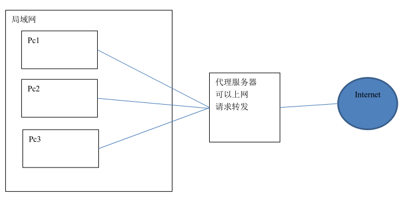
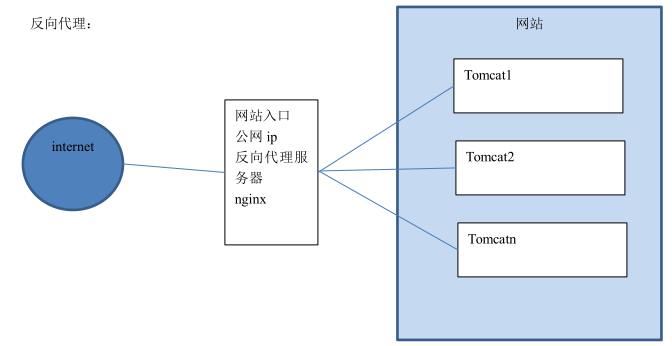
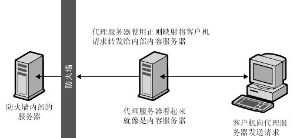
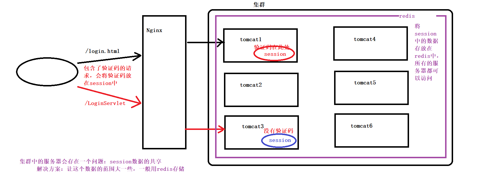
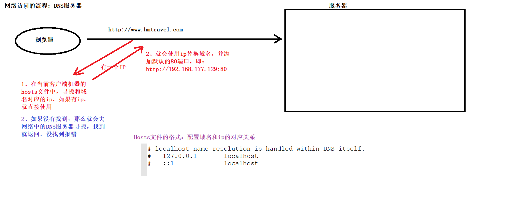

Nginx
一、概述
Nginx
是一款高性能的
http
服务器
/
反向代理服务器及电子邮件（
IMAP/POP3
）代理服务器。由俄罗斯的程序设计师
伊戈尔
·
西索夫（
Igor Sysoev
）
所开发，官方测试
nginx
能够支支撑
5
万并发链接，并且
cpu
、内存等资源消耗却非常低，运行非常稳定。
Nginx默认端口是80
二、应用场景
http
服务器
。
Nginx
是一个
http
服务可以独立提供
http
服务。可以做
网页静态服务器
。
虚拟主机
。可以实现在一台服务器
虚拟出多个网站
。例如个人网站使用的虚拟主机。
反向代理，负载均衡
。当网站的访问量达到一定程度后，单台服务器不能满足用户的请求时，需要用多台服务器集群可以使用
nginx
做
反向代理
。并且多台服务器可以平均分担负载，不会因为某台服务器负载高宕机而某台服务器闲置的情况。
三、退出和启动Nginx
退出
./nginx -s stop
./nginx -s quit
启动
cd /usr/local/ngiux/sbin
./nginx
./nginx -s reload
四、Nginx静态网站部署
虚拟主机，也叫“网站空间”，就是把一台运行在互联网上的物理服务器划分成多个“虚拟”服务器。
端口绑定
上传静态网站
修改Nginx的配置文件
访问测试
域名绑定
域名：是由一串用“点”分割的字符组成的Internet上某一台计算机或计算机组的名称，用于在数据传输时标识计算机的电子方位。
DNS:域名系统，域名解析器
顶级域名：
国家顶级域名，中国：cn
国际顶级域名，.com,.net
例如：baidu.com
二级域名：注册人的网上名称,如：ibm,yahoo,microsoft
例如：map.baidu.com
三级域名：三级域名用字母(A~Z,a~z,大小写等)、数字（0~9）和连接符（-）组成，各级域名之间用实点（.）连接，
如：item.map.baidu.com
域名与IP绑定：一个域名对应一个IP地址，一个IP地址可以被多个域名绑定（本地测试可以修改hosts文件）----------C:\Windows\System32\drivers\etc
做好域名指向后，修改Nginx配置文件后测试
五、Nginx反向代理与负载均衡
反向代理方式是指以代理服务器来接收Internet上的连接请求，然后将请求转发给内部网络上的服务器，并将从服务器上得到的结果返回给Internet上请求连接的客户端，此时代理服务器对外就表现为一个反向代理服务器
正向代理

反向代理

图解Nginx代理

集群中的问题

网络访问流程

六、负载均衡
概念：建立在现有网络结构之上，它提供了一种廉价有效透明的方法扩展网络设备和服务器的宽带、增加吞吐量、加强网络数据处理能力、提高网络的灵活性和可用性（就是分摊到多个操作单元上进行执行）
步骤
复制多个存放工程的tomcat
分别启动tomcat服务
配置负载均衡
修改Nginx配置文件
weight=2;---------设置该服务器权重为2